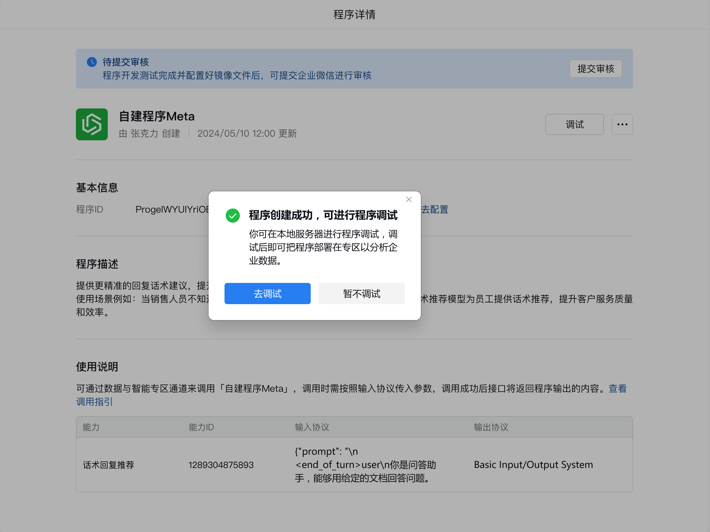
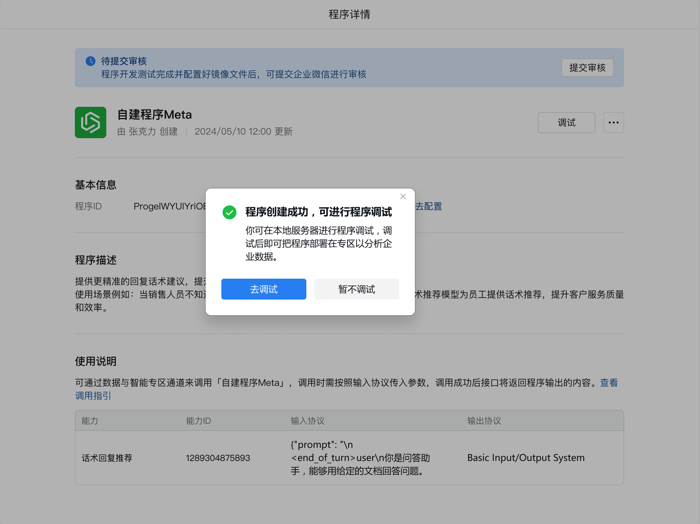
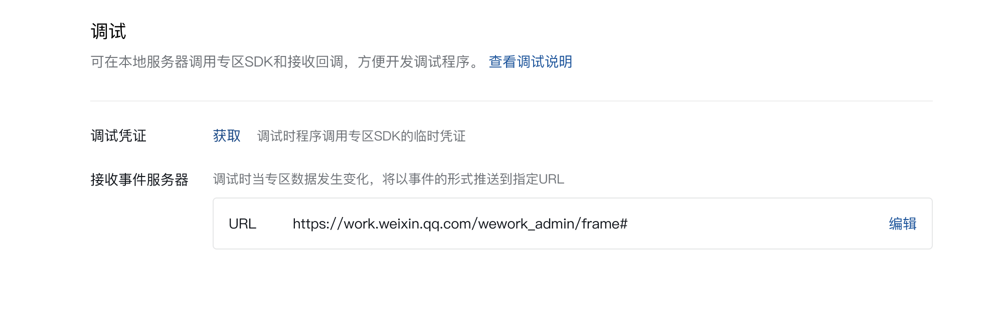
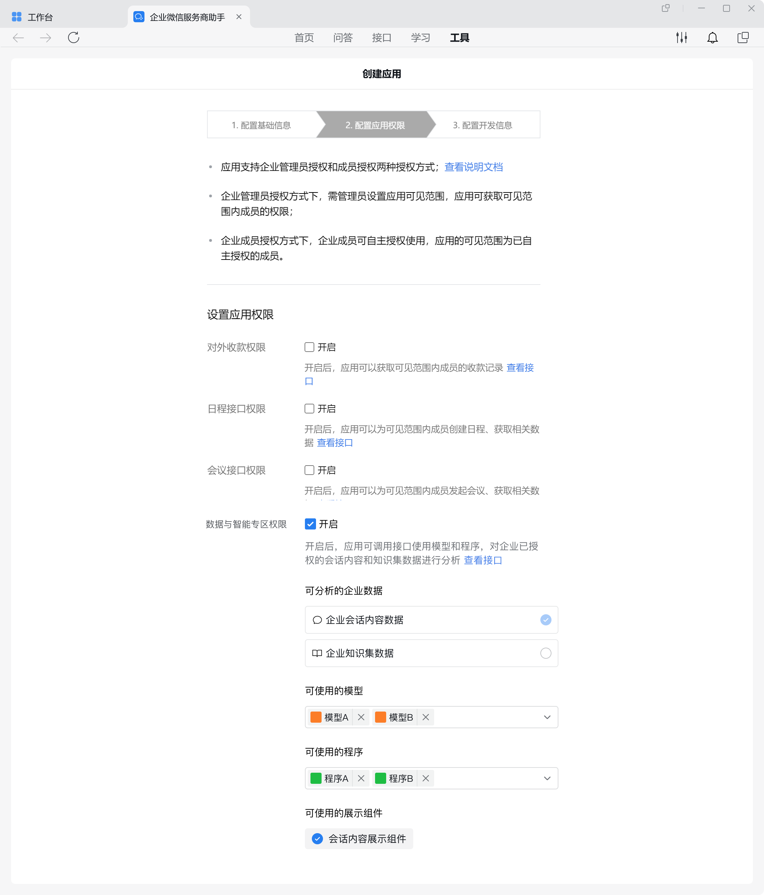
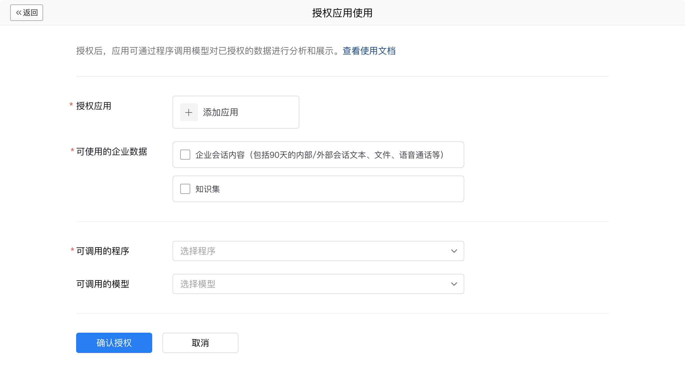
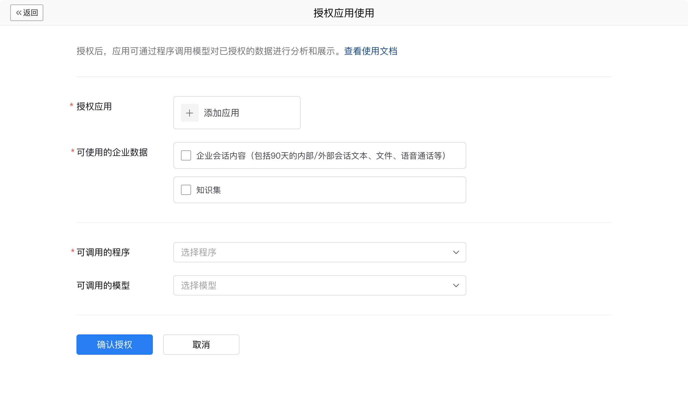
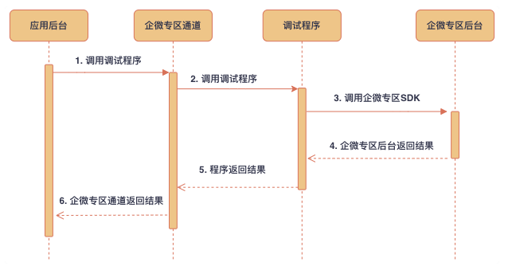
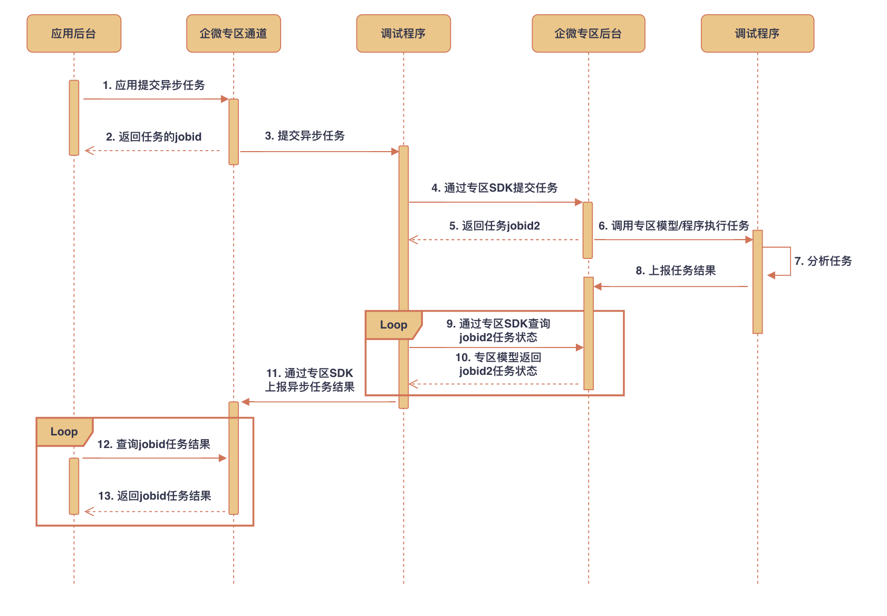
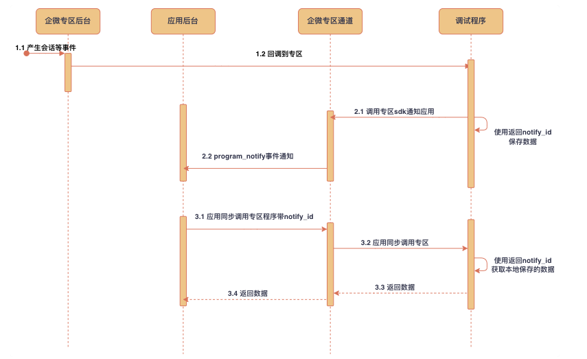

调试说明
最后更新：2024/10/22
目录
开发者在开发数据专区模型或程序时，可以使用调试模式在开发者服务器上来调用专区 sdk接口以及接收回调。
使用方法
开发者需要准备一个能够访问外网的服务器，用于部署调试模式的程序。该程序首先需要引用最新的专区SDK，实现获取会话记录等SDK接口的调用，以及接收企业微信专区后台的回调通知。 具体参考：专区程序接入指引、专区程序示例。![]() 特别提醒
特别提醒
特别提醒跟正式部署到专区的程序一样，本地调试程序也需要接入专区SDK，才能正常对数据包进行加解密。否则会出现相关异常情况：解析请求失败，以及请求专区接口失败。
由于接入了专区SDK，故本地调试程序无法直接请求调试，如直接curl发起请求。主动调用调试同样通过同步调用专区程序接口完成。
由于接入了专区SDK，故本地调试程序无法直接请求调试，如直接curl发起请求。主动调用调试同样通过同步调用专区程序接口完成。
1. 配置调试参数
服务商管理端入口：「桌面端服务商助手 - 工具 - 数据与智能专区」或「服务商后台 - 应用管理 - 数据专区 - 数据与智能专区」。
在数据与智能专区首页点击程序进入程序详情后，点击「调试-去调试」进入程序调试页面，即可查看程序调试参数。提示

在数据与智能专区首页点击程序进入程序详情后，点击「调试-去调试」进入程序调试页面，即可查看程序调试参数。
提示使用调试模式，不需要上传镜像文件，也不需要提交审核（不依赖审核状态）。

1.1 获取调试凭证
点击「调试凭证-获取」，弹窗二次确认后会通过服务商助手或企业微信团队将调试凭证推送消息给操作者。该凭证3天内有效，有效期内重复获取会获取到同样的凭证，并且不会刷新过期时间。
1.2 设置接收事件服务器
点击「接收事件服务器-设置」，可以设置部署了调试程序的URL地址。
开启调试模式后，通过应用同步调用专区程序或者应用异步调用专区程序主动发起的程序调用，以及专区程序接收事件通知的回调，都会转发到此URL

2. 配置应用可使用程序
第三方应用： 可以配置未上线的程序，配置后可使用测试企业安装测试。需要注意的是，此时仅可用于测试，需要将程序调试通过且部署之后，才能将应用提交上线审核。
代开发应用： 为测试企业开发代开发应用时，可以配置未上线的程序。

自建应用： 在「安全与管理 - 管理工具 - 数据与智能专区 - 通过应用使用」页面中，可以配置未上线的程序。 

3. 开启调试模式
以上工作准备完成后，可以参考开启专区调试模式调用文档中的API接口应用开启调试模式以及SDK接口SDK开启调试模式打开调试模式。调用SDK接口时需要使用「1.1 获取调试凭证」中获得的调试凭证。
这两个接口均调用成功后，调试模式才会生效。对应应用调用程序的请求以及接收的回调请求都会请求到「1.2 设置接收事件服务器」中设置的接收事件服务器，而不会请求到部署在企业微信专区中的程序。
此外，专区程序调用SDK目录下的所有接口都可以从开发者本地发起请求。对于自有模型分析以及异步调用自有分析程序接口，要求主调的程序以及被调用的模型或程序均打开调试模式。企业微信后台不会将输入协议中的占位符{chat}、{chatcontent}、{knowledge}、{tagjson}替换成会话内容、知识集文档片段以及客户标签组信息，而是替换成开发者调用接口时传入的debug_info，具体使用方法参见自有模型分析与异步调用自有分析程序的参数说明。提示
这两个接口均调用成功后，调试模式才会生效。对应应用调用程序的请求以及接收的回调请求都会请求到「1.2 设置接收事件服务器」中设置的接收事件服务器，而不会请求到部署在企业微信专区中的程序。
此外，专区程序调用SDK目录下的所有接口都可以从开发者本地发起请求。对于自有模型分析以及异步调用自有分析程序接口，要求主调的程序以及被调用的模型或程序均打开调试模式。企业微信后台不会将输入协议中的占位符{chat}、{chatcontent}、{knowledge}、{tagjson}替换成会话内容、知识集文档片段以及客户标签组信息，而是替换成开发者调用接口时传入的debug_info，具体使用方法参见自有模型分析与异步调用自有分析程序的参数说明。
提示4. 关闭调试模式
调试完成后，需要调用关闭专区调试模式接口关闭调试模式。
调用流程
1. 应用同步调用专区程序

2. 应用异步调用专区程序

3. 专区程序接收事件以及应用接收专区通知
需要调用设置专区接收回调事件接口设置才会回调
